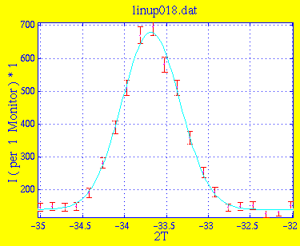
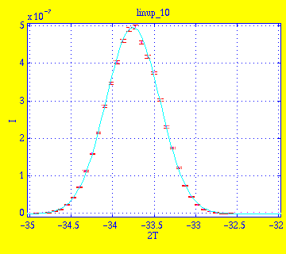
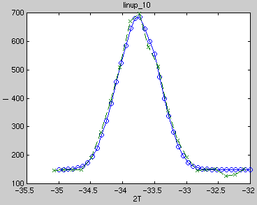

Amplitude 5.3996e+02 1.3310e+01 Centre -3.3683e+01 8.4350e-03 Width 3.4505e-01 8.4082e-03 Background 1.4043e+02 3.4637e+00 * Chi Squared 0.6813
This is the result linup_10.sim of simulation with 1e6 neutrons. Instrument definition linup-5.instr.

Amplitude 4.9699e-07 3.5490e-09 Centre -3.3755e+01 1.4894e-03 Width 3.2601e-01 1.5015e-03 Background -1.3929e-09 4.7673e-10 * Chi Squared 4.0136
